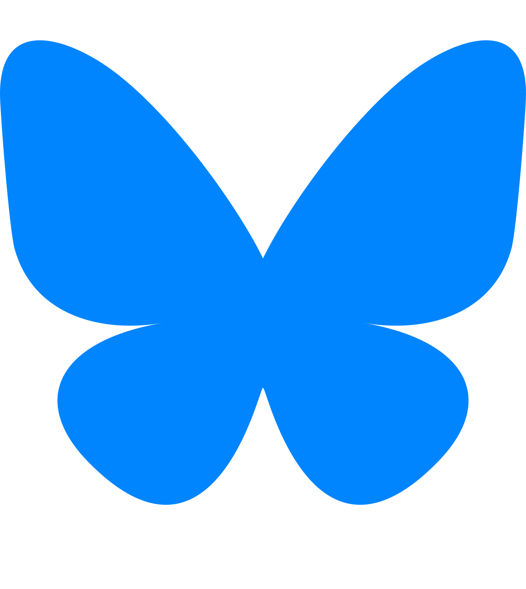

ArmchairCelts | Celtic FC News Reader
Change screen background
Latest Celtic Videos

LAST CHANCE SALOON? | Torreense vs Celtic | LIVE MATCH PREVIEW!
Ryan118 | 26 Nov 2026

Share
WHEN NAKAMURA WON CELTIC THE LEAGUE ! / KILMARNOCK VS CELTIC 22/4/07
Cmon The Hoops Celtic 🍀 | 26 Nov 2026
Share


Full Media Conference | Martin O’Neill previews #TorreenseCeltic (25/11/26)
Celtic FC | 25 Nov 2026
Share

Full Media Conference | Liam Scales previews #TorreenseCeltic (25/11/26)
Celtic FC | 25 Nov 2026
Share


TWO BIG GAMES AHEAD THIS WEEK! / DURAN TO LEEDS/ CELTIC TRANSFER TALK
Cmon The Hoops Celtic 🍀 | 25 Nov 2026
Share


JOTA REPLACES MIKA BAUR IN CELTIC'S EUROPA LEAGUE SQUAD FOR THE REMAINING GAMES #JOTAONTHEWING
Cmon The Hoops Celtic 🍀 | 25 Nov 2026
Share